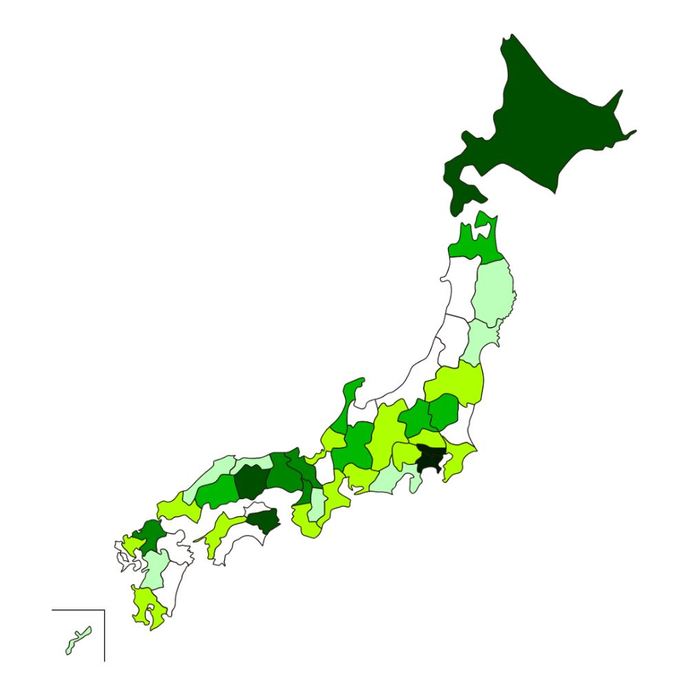
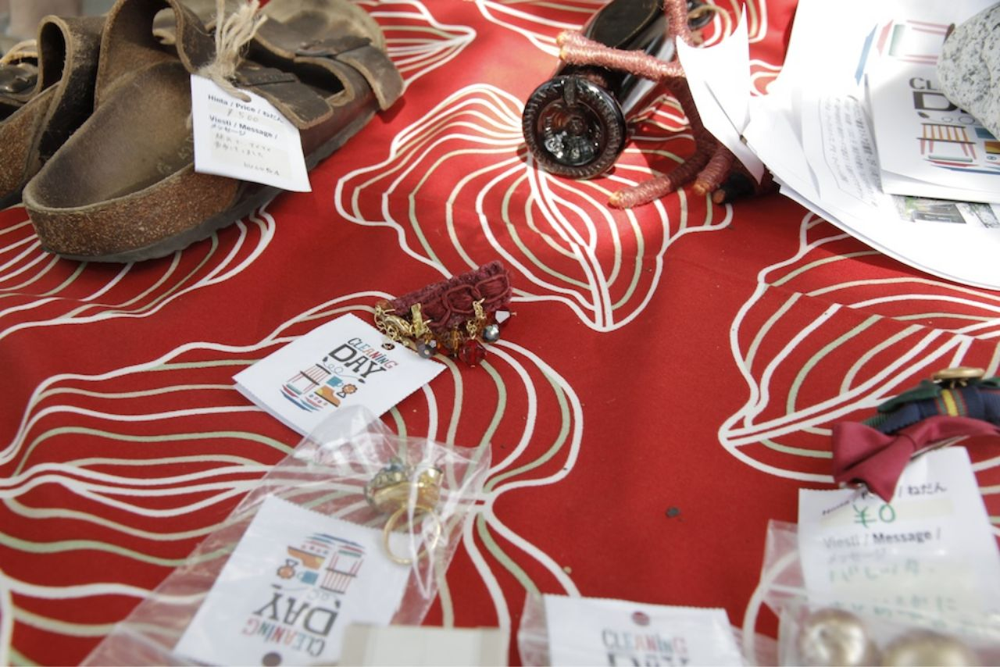
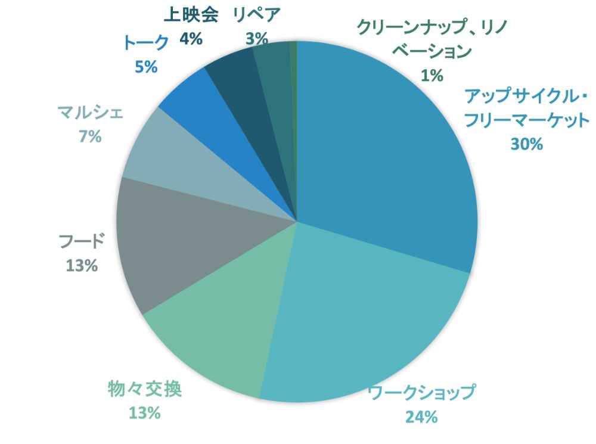

北欧フィンランドで、2012年より年2回（5月・8月最終週の土曜日）開催されているリサイクル・カルチャー・イベント。「リサイクルのハードルを下げる」「地域交流」を目的として、 オフィシャルサイトに登録すれば、誰でもどこでもフリーマーケットを開くことができます。 各フリーマーケット主催者が責任を持って開催し、2014年5月の第5回参加会場数はフィンランド国内で4,500以上、 現在ではすっかり定着した人気イベントです。
フィンランドの基本コンセプトを踏まえ、日本のクリーニングデイのコンセプトは
「アップサイクル・マーケット」
「アップサイクル」とは、モノを再利用するリユースやリサイクルだけでなく、モノに新しい価値や有用性を見出すこと。
「アップサイクル・マーケット」は、
・古い不要なモノに新しい価値（ストーリー）をつける
・古い不要なモノを生まれ変わらせる
ことを目指しています。
また、フィンランドの理念を尊重して「セルフ・オーガナイズ」することを大事にしています。 つまり、決まったルールに従うのではなく、自分にあったサイズでムリなく、地域性に富んだアイディアを楽しく、責任を持って形にしていくことです。
2014年5月24日、まだ一般には広く知られていない「アップサイクル」について学び、クリーニングデイというモノとヒトの新しいつながりを生み出すムーブメントを楽しむファンを作ることを目的として、エコロジカルな活動に関心の高い鎌倉で初開催しました。 第2回以降、クリーニングデイを「モノと対話する日」と位置づけ、フリーマーケットだけでなく、様々な形でヒトとの交流を楽しみながら、自分とモノとの関係を見直していく１日としています。そして、フィンランドと同日開催以外の日程での開催希望があったので、フィンランドの事務局にも許諾を得て同日以外の開催を「スピンオフ開催」として設定しました。自分のペースでムリのない開催を推奨したこともあって年々スピンオフ開催が増え、最近では毎月のように全国どこかでクリーニングデイが開催されるようになりました。大幅な拡大も縮小もすることなく、アップサイクルをテーマとしたコミュニティのプラットフォームとなって、クリーニングデイの活動はゆるりと全国に広がっています。また、ジャンルを特定したクリーニングデイも開催者の中から生まれ、本の交換に特化したクリーニングデイ・ブックス、素材市を主とするクリーニングデイ・マテリアルが始まりました。事務局主体で、ヤーン（糸）という素材にこだわったクリーニングデイ・ヤーン、食のおいしい循環を作り出すクリーニングデイEATも始めています。クリーニングデイのコンセプトに賛同した日本全国の方々とのゆるやかで有機的なつながりと地域ならではの豊かなアイディア、フィンランドや世界とのつながりを大切に、サステナブルな未来を、楽しみながら目指していきます。
日本全国で累計430会場にて開催（2022年4月現在）。
クリーニングデイ開催会場マップ（色が濃くなるほど、開催会場数が多い）

クリーニングデイには「開催する」と「参加する」の２パターンの楽しみ方があります。
(1) 地域でつながる！自分のサイズで、フリーマーケットやモノを見直すプログラムを企画
自宅や仲間と近所の場所を借りてフリーマーケットを開催しましょう！その時に忘れちゃいけないのが、「アップサイクル」な気持ち。要らないモノなら何でもいいのではなく、次に誰かに使って欲しいモノに、クリーニングデイのタグにメッセージをつけて、並べてみましょう。ストーリーを感じるメッセージの効果は絶大です。

※メッセージが書けるタグはダウンロード(PDF)できます。
クリーニングデイのプログラムは、フリーマーケットだけではありません。

本の交換会は特に初めての方にオススメです。ママさん向けの子ども服の交換会など、テーマやアイテムを絞った交換がやりやすいようです。
気に入っていたけど着なくなった洋服の布地などの素材を組み合わせ、自分の手で新たなモノに生まれ変わらせてみましょう。自分で作ったモノは、大事にするはずです。
壊れかけたまま、家に眠っているモノたち。出来たら捨てずにまた使いたいモノの直し方を教えてくれる、先生を探しましょう。先生がいなくても、手先の器用な友達と一緒に、お茶でも飲みながら、リペアを楽しみましょう。オンラインでの開催も◎
市場に出せず、美味しいのに捨てられてしまう食材の話を聞きつけたら、チャンスです。モッタイナイ！という想いに賛同してくれる人たちと一緒に料理をして、食事会を開きましょう。
『365日のシンプルライフ』(80分/字幕・吹替なし)
：自分のモノを見直すきっかけになる映画です。上映後にみんなで話す機会を設けることもオススメです。盛り上がります。自主上映のお申し込み方法などの詳細はこちらです。
『Take It Slow! : Sustainable Fashion for Local Community in Helsinki（ヘルシンキの“敢えてスローを選ぶ”クリエイターたち～ローカル・コミュニティのための持続可能なファッション）』（27分/日本語字幕あり）
：古着や端材のリメイクなどアップサイクルなファッション・ビジネスを展開する”クリーニングデイ発祥の地” ヘルシンキのクリエイターたちを追った短編ドキュメンタリー。お金でない価値を大事にしたサステナブルなモノ作りと、それを続けていくためにビジネスとすることのクリエイターたちの葛藤は、共感と課題を投げかけてきます。
※上映をご希望の方は cleaningday@cleaningday.jp までお問い合わせ下さい。上映はクリーニングデイのプログラム内限定となっておりますので、ご了承ください。
その他、これまで開催されたクリーニングデイやクリーニングデイ大会議のレポートの開催事例を参考にしてください。多種多様なプログラムが満載です。
(2) 開催希望の方は下記の申請書を記入の上、クリーニングデイ・ジャパン事務局（cleaningday@cleaningday.jp）までお送り下さい。申請書はこちらからPDF版またはExcel版をダウンロードできます。
※ どちらにも書き込めない場合は、お手数ですが、各項目をメールにてお送り下さい。
※ 個人宅等での開催など、事務局からの告知を必要としない場合も開催状況把握のために申請をお願いします（2019年4月ルール改正）
※ イベント名のどこかに必ず「クリーニングデイ（英語表記可）」を入れて下さい。
※ クリーニングデイは運営・広報・集客等すべてセルフ・オーガナイズ（各会場開催者の責任の元で実施）のイベントですので、事前にご了承ください。
※ 5/8月最終週土曜日の世界同時開催以外の日程でもスピンオフとして開催可能です。
(3) クリーニングデイのロゴポスター（A3サイズ）をダウンロードして、近所での告知にご利用ください。
〉 A3サイズポスターをダウンロード（PDF）
〉 A3サイズぬりえバージョンポスターをダウンロード（PDF）
※ロゴポスターはイベントの販促ツールとしてのみご使用下さい。販売物（有料ワークショップ等での使用も含む）では使用できませんのでご了承下さい。
(4) 先ずは自分が楽しんで、クリーニングデイ当日を迎えましょう！
当日の様子をぜひSNSに投稿してください。出来るだけシェアします。
SNSやVENUESにアップされている情報を参考に、気になるクリーニングデイに遊びに行きましょう！
会場によってプログラムの内容が全く異なりますから、事前にチェックしておきましょう。
クリーニングデイ開催者の開催報告&お悩み相談会「クリーニングデイ大会議」を、年に1回、ハイブリッドまたはオンラインで開催しています。様々なプログラムや運営のアイディア交換が、毎回刺激的です。開催検討中の方の参加も歓迎！全国の開催者がゆるくつながる場です。
〉 2015.07.14（火）第2回クリーニングデイ大会議
〉 2015.01.27（火）第1回クリーニングデイ大会議
〉 2017.02.18（土）第3回クリーニングデイ大会議
〉 2018.02.10（土）第4回クリーニングデイ大会議
〉 2019.02.17（日）第5回クリーニングデイ大会議
〉 2020.02.23（日）第6回クリーニングデイ大会議
〉 2021.02.21（日）第7回クリーニングデイ大会議
〉 2022.02.27（日）第8回クリーニングデイ大会議